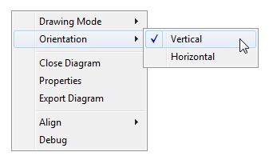
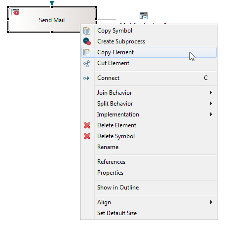
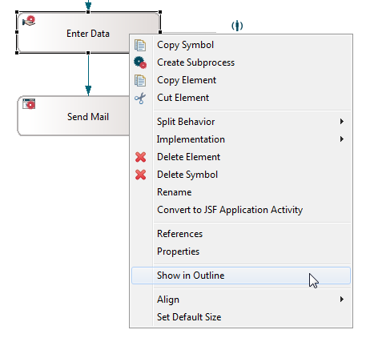

Diagrams may contain a single process definition (including activities, activity performers, data, applications and resources) or definitions of hierarchies describing subprocess dependencies or relations between organizations/sub-organizations and their members. An arbitrary number of diagrams - or at least one diagram - may be associated to a process definition. With each newly created process definition, a default diagram for this definition is created.
Each model contains a Default Diagram, which can be seen and opened in the Outline view. Also, each process definition contains a Default Diagram, created automatically when a new process definition is added to a model. We will refer to the first type of diagrams as model diagrams and process definition diagrams or simply diagrams to the other type.
Figure: Two Types of Diagrams
New model diagrams can be created using the option New Diagram in the pop-up menu of the model element. This refers only to the model element in the Model section of the Outline view. Model diagrams which visualize organizational hierarchies or hierarchies of processes/subprocesses are created this way. They serve primarily for visualization purposes. Whereas hierarchies of roles and organizations provide a semantically complete information on the relationships between the elements of the diagram, the hierarchy of processes only states which processes are used as subprocesses. The information "how" they are embedded in the super-process (e.g. within which activity) has to be defined in a corresponding process definition diagram.
Likewise, new diagrams containing process definitions can be added using the same option in the process definition pop-up menu.
Deleting a diagram is done by selecting a diagram in the Outline view and choosing Delete in the diagram's pop-up menu.
To work with pools and lanes, you have to choose a special drawing mode, the BPMN mode. There is a default drawing mode setting for your workspace, which you can change in the preferences settings, as described in the section Default Drawing Mode of the Setting Process Manager Preferences chapter.
To enable or disable the drawing mode for a process diagram:
Figure: Drawing Mode Option
Note, that this is only possible before creating the first lane in your diagram.
Before you start to model you can choose the preferred direction of modeling:

The default modeling direction is "vertical". You can change the default value in the Preferences dialog (see chapter Setting Process Manager Preferences).
Note that changing the modeling orientation is only possible if:
For comfortable modeling you can choose some alignment option:
Figure: Alignment Options
With the Snap to Geometry option enabled, the elements are aligned relative to other elements when you are dragging them on the canvas. Blue horizontal or vertical lines will appear then, while dragging an element near another, as displayed in the following screenshot:
Figure: Snap to Geometry
To facilitate the positioning of your elements in the diagram during modeling, you have the option to let your elements snap to a grid. The Align > Grid option enables this functionality.
A grid will be displayed by small gray crosses. Elements are snapped to the grid when they are created or dragged. In the Preferences dialog you can define the size of this grid and a factor for the grid to be visible. Please refer to the chapter Setting Process Manager Preferences to get information on how to set these options.
This is the size in pixel of the grid elements, where the elements are snapped to in your diagram. The default size is set to 5 pixel.
Note that the grid size should be set before adding elements to a diagram. If you change the grid size during a modeling process the existing elements will not consistently follow the snap rules anymore.
You might want to have a more detailed grid for your elements to be snapped to than visible. For that reason you can set the grid factor. The size of the visible grid will be the size of the snap to grid times the specified factor. For example if you like to use a grid of size 30 to be snapped to, but only grids of size 90 to be displayed, enter the grid size 30 and the factor 3. Then the grid will be displayed as in the following screenshot:
Figure: Example with Grid Size 30 and Factor 3.
Toolbars are provided for process diagrams and model diagrams.
The diagram also has a tool palette from which you can build lanes, add annotations and connections, as well as create new items like Activities, Data, Applications, Triggers and Participants.
Figure: Diagram Toolbar Palette
From the toolbar palette of the model's diagram you can add annotations and connections or create new items like Process Definitions, Data, Applications and Participants.
Figure: Model Diagram Toolbar Palette
All symbols have a set of properties and behaviors in common. This can be summarized in the following rules:
To change the size of a symbol select it and drag on the provided handles to the desired size:
Figure: Resize a Symbol
Once you changed the size of a symbol, you can reset the size to the default symbol size. This option is only available, if the alignment Grid Option is disabled and/or the Process Manager Preferences option Enable Snap to Grid is disabled.
To reset the symbol to its origin size:
Figure: Set Default Size
To copy a symbol in the diagram view right-click the symbol and select Copy
Symbol from the context menu.
Figure: Copy a Symbol
To copy more than one symbol press the Ctrl button to select all symbols to copy. Then right-click and choose Copy Symbol.
Figure: Copying more than one Symbol.
Paste the symbol or symbols to the diagram canvas by right-clicking
in the diagram and selecting Paste Symbol.
Figure: Paste the Symbol
You can copy and paste symbols between diagrams belonging to the same process definition.
You have the option to copy, paste and cut elements in the diagram. Right-click one or more elements and select one of the following options:

Figure: Copy an Element in the Diagram
To paste the element(s) right-click on the diagram canvas and select Paste Element.
Figure: Paste an Element to the Diagram
Please refer to the chapter Copying and Pasting Modeled Elements for detailed information on copying and pasting model elements.
When deleting model elements you must make a distinction between deleting an element from the model information or only deleting a symbol from a diagram. To do the first - delete an element from model - you proceed as follows:
You have the option to highlight the element of a symbol, which you select in the diagram, in the Outline view. Right-click the symbol and choose Show in Outline.

Figure: Select the Option "Show in Outline".
The selected element will then be also selected in the Outline view:
Figure: Show in Outline
To rename elements displayed in the diagram canvas, select an element and enter the F2 key. The entry field is changed to editing mode then, where you can change the name of the element.
Figure: Rename an Element
You can also rename an element via right-click and choosing Rename.
Figure: Rename via Context Menu
Please note that it is not possible to rename predefined data.
Duplicate connection symbols used in a large model may cause the performance to suffer. In case duplicate connection symbols are used in a diagram, an option is provided to simplify the diagram. Right-click on the diagram canvas and choose Simplify Diagram, as shown in the following figure:
Figure: Simplify Diagram Option
In the following simple example, the connection from the first activity to the Data symbol is duplicate. Thus, in the diagram context menu, the option Simplify Diagram is provided:
Figure: Simplify Diagram Option
After selecting this option, the duplicate connection is removed from the diagram:
Figure: Simplify Diagram Option
You have the option to construct hierarchies in a diagram to visualize the organizational structures defined in the model. Select Create Organization Hierarchy in the diagram context menu.
Figure: Creating an Organization Hierarchy
For details please refer to section Creating Organization Hierarchies of chapter Retrieving Diagrams from Model Information.
You have the option to construct an activity graph in a diagram to visualize the series of activities defined in the model. Select Create Activity Graph in the diagram context menu.
Figure: Creating an Activity Graph
For details please refer to section Creating Activity/Transition Graphs of chapter Retrieving Diagrams from Model Information.
Some people prefer keyboard over the mouse for small tasks, for a quick action. Stardust provides a shortcut key to resize or move a symbol in the diagram, using only keyboard. After selecting a symbol in the diagram, press "." (The DOT key), which displays handles around the selected symbol. Then you can use the arrow keys on the keyboard to resize or move the selected symbols. If you press the "." key multiple times, the handles will change their position in sequence, and you can choose the direction to move or change the size of the symbol. Press Enterkey to accept the changes.
You can even select many symbols using either mouse or keyboard, and use the "." key to resize or move all of them together. Please see the figures below.
Figure: Moving one symbol
Figure: Moving many symbols
Figure: Resizing one symbol
Figure: Resizing many symbols